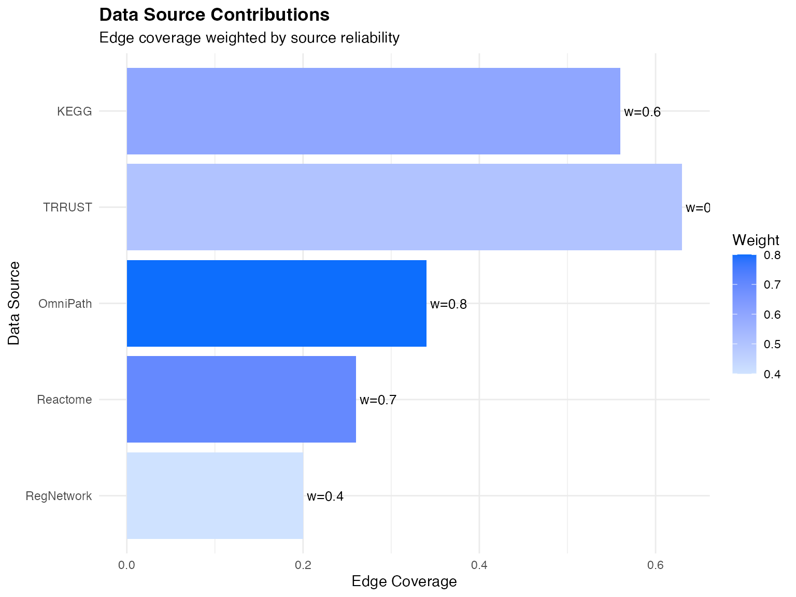
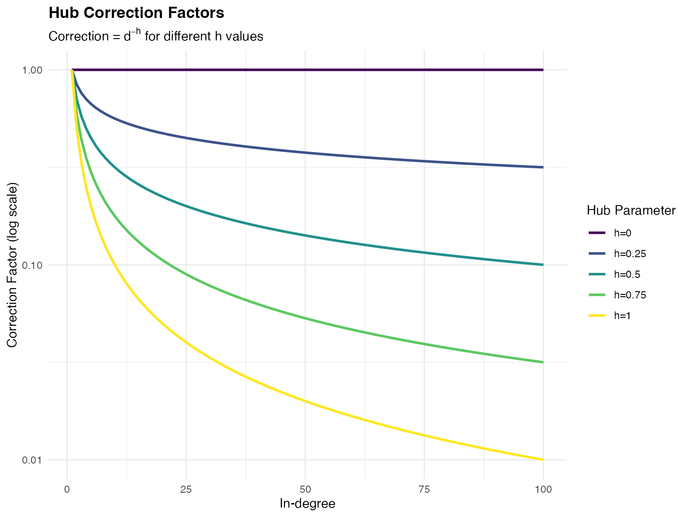
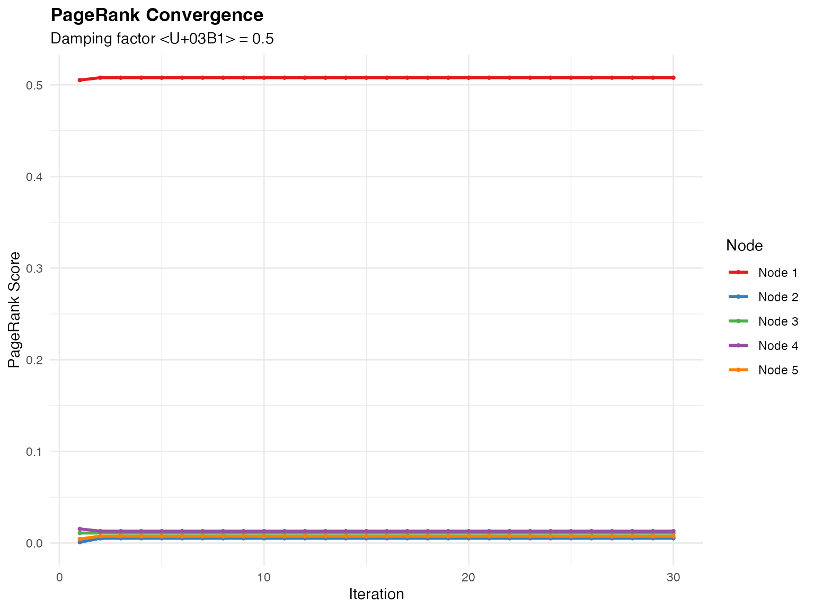
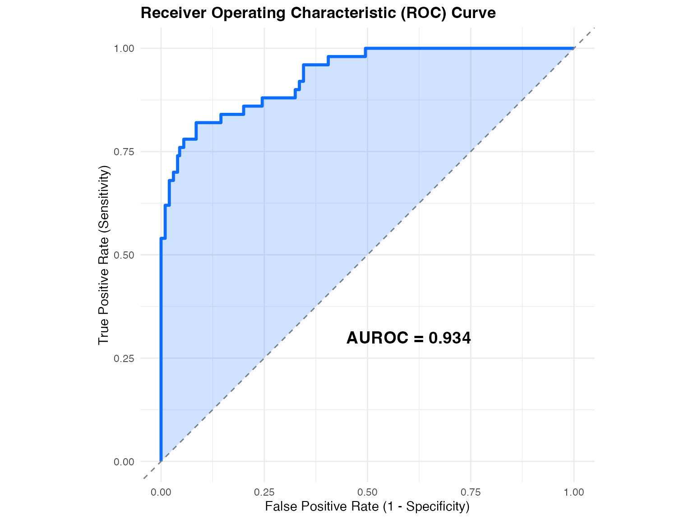
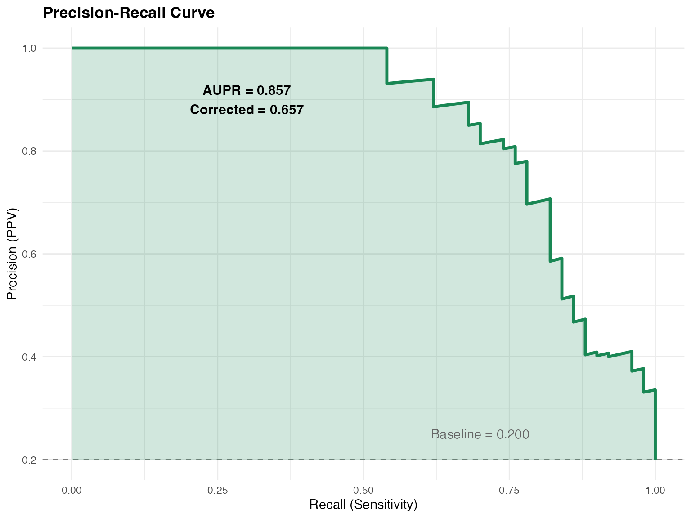

Mathematical Foundation of NicheNet
Zaoqu Liu, Robin Browaeys, Wouter Saelens, Yvan Saeys
2026-01-24
Source:vignettes/mathematical_foundation.Rmd
mathematical_foundation.RmdIntroduction
This vignette provides a rigorous mathematical treatment of the NicheNet algorithm. We describe the probabilistic framework underlying ligand-target predictions and the statistical methods used for ligand activity inference.
Network Representation
Graph Notation
Let be a weighted directed graph where:
- is the set of genes/proteins
- is the set of directed edges
- assigns positive weights to edges
The adjacency matrix is defined as:
Multi-Source Integration
Given data sources with edge sets and source weights , the integrated adjacency matrix is:
where is the binary adjacency matrix for source .
# Simulate multi-source integration
set.seed(42)
n_sources <- 5
source_names <- c("OmniPath", "KEGG", "Reactome", "TRRUST", "RegNetwork")
weights <- c(0.8, 0.6, 0.7, 0.5, 0.4)
# Create example edge contributions
edge_contributions <- data.frame(
source = rep(source_names, each = 100),
weight = rep(weights, each = 100),
edge_present = rbinom(500, 1, rep(c(0.3, 0.5, 0.4, 0.6, 0.2), each = 100))
) %>%
mutate(contribution = weight * edge_present)
# Summarize
source_summary <- edge_contributions %>%
group_by(source) %>%
summarise(
coverage = mean(edge_present),
avg_contribution = mean(contribution),
weight = first(weight)
) %>%
arrange(desc(avg_contribution))
ggplot(source_summary, aes(x = reorder(source, avg_contribution), y = coverage, fill = weight)) +
geom_col() +
geom_text(aes(label = sprintf("w=%.1f", weight)), hjust = -0.1, size = 3.5) +
coord_flip() +
scale_fill_gradient(low = "#cfe2ff", high = "#0d6efd") +
labs(
title = "Data Source Contributions",
subtitle = "Edge coverage weighted by source reliability",
x = "Data Source",
y = "Edge Coverage",
fill = "Weight"
) +
theme_minimal() +
theme(plot.title = element_text(face = "bold"))
Visualization of multi-source network integration
Hub Correction
Motivation
Highly connected nodes (hubs) can dominate random walk-based methods. To mitigate this, we apply degree-based normalization.
Mathematical Formulation
Let be the in-degree of node . The hub-corrected weight matrix is:
where is the hub correction parameter: - : No correction - : Full inverse-degree normalization
# Demonstrate hub correction effect
hub_demo <- data.frame(
in_degree = 1:100,
h_0 = 1,
h_0.25 = (1:100)^(-0.25),
h_0.5 = (1:100)^(-0.5),
h_0.75 = (1:100)^(-0.75),
h_1 = (1:100)^(-1)
) %>%
pivot_longer(-in_degree, names_to = "h_value", values_to = "correction_factor") %>%
mutate(h_value = factor(h_value,
levels = c("h_0", "h_0.25", "h_0.5", "h_0.75", "h_1"),
labels = c("h=0", "h=0.25", "h=0.5", "h=0.75", "h=1")))
ggplot(hub_demo, aes(x = in_degree, y = correction_factor, color = h_value)) +
geom_line(linewidth = 1) +
scale_y_log10() +
scale_color_viridis_d() +
labs(
title = "Hub Correction Factors",
subtitle = expression(paste("Correction = ", d^{-h}, " for different h values")),
x = "In-degree",
y = "Correction Factor (log scale)",
color = "Hub Parameter"
) +
theme_minimal() +
theme(
plot.title = element_text(face = "bold"),
legend.position = "right"
)
Effect of hub correction on edge weights
Personalized PageRank
Random Walk Interpretation
Consider a random walker on graph :
- Start at ligand node
- At each step:
- With probability : follow an outgoing edge (weighted by )
- With probability : restart at
The stationary distribution satisfies:
where: - is the indicator vector for ligand - is the row-normalized transition matrix - is the out-degree matrix
Iterative Computation
For large networks, we use power iteration:
Convergence is guaranteed for .
# Simulate PPR convergence
set.seed(123)
n_nodes <- 50
alpha <- 0.5
max_iter <- 30
# Create random transition matrix
P <- matrix(runif(n_nodes^2), n_nodes, n_nodes)
P <- P / rowSums(P)
# Start vector (ligand at position 1)
e_L <- rep(0, n_nodes)
e_L[1] <- 1
# Iterate
pi_history <- matrix(NA, max_iter, n_nodes)
pi <- e_L
for (t in 1:max_iter) {
pi <- (1-alpha) * e_L + alpha * t(P) %*% pi
pi_history[t,] <- pi
}
# Plot convergence for top nodes
convergence_df <- data.frame(
iteration = rep(1:max_iter, 5),
node = rep(paste0("Node ", 1:5), each = max_iter),
ppr = c(pi_history[,1], pi_history[,2], pi_history[,3],
pi_history[,4], pi_history[,5])
)
ggplot(convergence_df, aes(x = iteration, y = ppr, color = node)) +
geom_line(linewidth = 1) +
geom_point(size = 0.8) +
scale_color_brewer(palette = "Set1") +
labs(
title = "PageRank Convergence",
subtitle = paste("Damping factor α =", alpha),
x = "Iteration",
y = "PageRank Score",
color = "Node"
) +
theme_minimal() +
theme(
plot.title = element_text(face = "bold"),
legend.position = "right"
)
Personalized PageRank convergence
Ligand-Target Matrix Construction
Ligand Activity Inference
Statistical Framework
Binary Classification Setup
For a ligand with scores and target indicator :
- Positive class: (genes of interest)
- Negative class: (background genes)
AUROC Computation
Interpretation: Probability that a randomly chosen positive has higher score than a randomly chosen negative.
# Generate example ROC curve
set.seed(456)
n_pos <- 50
n_neg <- 200
# Good classifier
scores_pos <- rnorm(n_pos, mean = 0.7, sd = 0.2)
scores_neg <- rnorm(n_neg, mean = 0.3, sd = 0.2)
all_scores <- c(scores_pos, scores_neg)
all_labels <- c(rep(1, n_pos), rep(0, n_neg))
# Compute ROC
thresholds <- sort(unique(all_scores), decreasing = TRUE)
tpr <- sapply(thresholds, function(t) sum(scores_pos >= t) / n_pos)
fpr <- sapply(thresholds, function(t) sum(scores_neg >= t) / n_neg)
roc_df <- data.frame(fpr = c(0, fpr, 1), tpr = c(0, tpr, 1))
# Calculate AUROC
auroc <- sum(diff(c(0, fpr, 1)) * (c(0, tpr, 1)[-1] + c(0, tpr, 1)[-length(c(0,tpr,1))]) / 2)
ggplot(roc_df, aes(x = fpr, y = tpr)) +
geom_line(color = "#0d6efd", linewidth = 1.2) +
geom_abline(slope = 1, intercept = 0, linetype = "dashed", color = "gray50") +
geom_ribbon(aes(ymin = fpr, ymax = tpr), fill = "#0d6efd", alpha = 0.2) +
annotate("text", x = 0.6, y = 0.3,
label = sprintf("AUROC = %.3f", auroc),
size = 5, fontface = "bold") +
labs(
title = "Receiver Operating Characteristic (ROC) Curve",
x = "False Positive Rate (1 - Specificity)",
y = "True Positive Rate (Sensitivity)"
) +
theme_minimal() +
theme(plot.title = element_text(face = "bold")) +
coord_equal()
AUROC computation illustrated
Baseline Correction
Random classifier AUPR equals the class prior:
Corrected AUPR:
# Compute PR curve
precision <- sapply(thresholds, function(t) {
tp <- sum(scores_pos >= t)
fp <- sum(scores_neg >= t)
if (tp + fp == 0) return(1)
tp / (tp + fp)
})
recall <- sapply(thresholds, function(t) sum(scores_pos >= t) / n_pos)
pr_df <- data.frame(recall = c(0, recall), precision = c(1, precision))
baseline <- n_pos / (n_pos + n_neg)
# Calculate AUPR
aupr <- sum(diff(c(0, recall)) * precision)
ggplot(pr_df, aes(x = recall, y = precision)) +
geom_line(color = "#198754", linewidth = 1.2) +
geom_hline(yintercept = baseline, linetype = "dashed", color = "gray50") +
geom_ribbon(aes(ymin = baseline, ymax = precision), fill = "#198754", alpha = 0.2) +
annotate("text", x = 0.7, y = baseline + 0.05,
label = sprintf("Baseline = %.3f", baseline), color = "gray40") +
annotate("text", x = 0.3, y = 0.9,
label = sprintf("AUPR = %.3f\nCorrected = %.3f", aupr, aupr - baseline),
size = 4, fontface = "bold") +
labs(
title = "Precision-Recall Curve",
x = "Recall (Sensitivity)",
y = "Precision (PPV)"
) +
theme_minimal() +
theme(plot.title = element_text(face = "bold"))
Precision-Recall curve with baseline
Numerical Implementation
Computational Considerations
Sparse Matrix Operations
For efficiency, NicheNet uses sparse matrix representations:
# Example sparse matrix
library(Matrix)
# Dense vs sparse storage
n <- 1000
sparsity <- 0.01
set.seed(789)
dense_mat <- matrix(0, n, n)
dense_mat[sample(n^2, n^2 * sparsity)] <- runif(n^2 * sparsity)
sparse_mat <- Matrix(dense_mat, sparse = TRUE)
cat("Dense matrix size:", format(object.size(dense_mat), units = "MB"), "\n")## Dense matrix size: 7.6 Mb
cat("Sparse matrix size:", format(object.size(sparse_mat), units = "MB"), "\n")## Sparse matrix size: 0.1 Mb
cat("Compression ratio:", round(as.numeric(object.size(dense_mat)) /
as.numeric(object.size(sparse_mat)), 1), "x\n")## Compression ratio: 63.7 xSummary
The NicheNet algorithm combines:
- Multi-source network integration with weighted aggregation
- Hub-corrected adjacency matrices to prevent degree bias
- Personalized PageRank for ligand-target scoring
- Robust statistical evaluation using AUROC, AUPR, and correlation
This mathematical framework enables principled inference of intercellular signaling from transcriptomic data.
References
Browaeys R, Saelens W, Saeys Y. NicheNet: modeling intercellular communication by linking ligands to target genes. Nature Methods 17, 159–162 (2020).
Haveliwala TH. Topic-sensitive PageRank. WWW ’02: Proceedings of the 11th International Conference on World Wide Web (2002).
Davis J, Goadrich M. The relationship between Precision-Recall and ROC curves. ICML ’06 (2006).
Session Info
## R version 4.4.0 (2024-04-24)
## Platform: aarch64-apple-darwin20
## Running under: macOS 15.6.1
##
## Matrix products: default
## BLAS: /Library/Frameworks/R.framework/Versions/4.4-arm64/Resources/lib/libRblas.0.dylib
## LAPACK: /Library/Frameworks/R.framework/Versions/4.4-arm64/Resources/lib/libRlapack.dylib; LAPACK version 3.12.0
##
## locale:
## [1] C
##
## time zone: Asia/Shanghai
## tzcode source: internal
##
## attached base packages:
## [1] stats graphics grDevices utils datasets methods base
##
## other attached packages:
## [1] Matrix_1.7-4 tidyr_1.3.2 dplyr_1.1.4 ggplot2_4.0.1
##
## loaded via a namespace (and not attached):
## [1] gtable_0.3.6 jsonlite_2.0.0 compiler_4.4.0 tidyselect_1.2.1
## [5] dichromat_2.0-0.1 jquerylib_0.1.4 systemfonts_1.3.1 scales_1.4.0
## [9] textshaping_1.0.4 yaml_2.3.12 fastmap_1.2.0 lattice_0.22-7
## [13] R6_2.6.1 labeling_0.4.3 generics_0.1.4 knitr_1.51
## [17] htmlwidgets_1.6.4 tibble_3.3.1 desc_1.4.3 bslib_0.9.0
## [21] pillar_1.11.1 RColorBrewer_1.1-3 rlang_1.1.7 cachem_1.1.0
## [25] xfun_0.56 fs_1.6.6 sass_0.4.10 S7_0.2.1
## [29] otel_0.2.0 viridisLite_0.4.2 cli_3.6.5 pkgdown_2.1.3
## [33] withr_3.0.2 magrittr_2.0.4 digest_0.6.39 grid_4.4.0
## [37] lifecycle_1.0.5 vctrs_0.7.0 evaluate_1.0.5 glue_1.8.0
## [41] farver_2.1.2 ragg_1.5.0 purrr_1.2.1 rmarkdown_2.30
## [45] tools_4.4.0 pkgconfig_2.0.3 htmltools_0.5.9